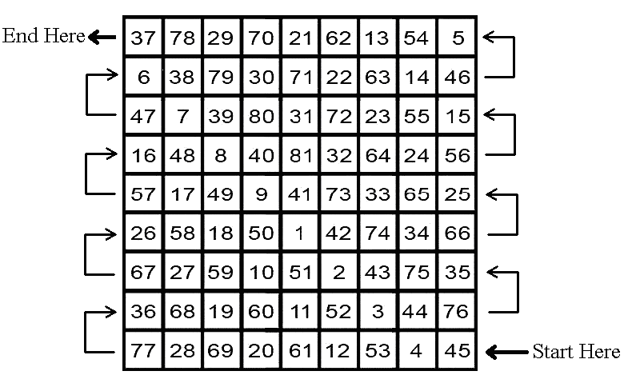
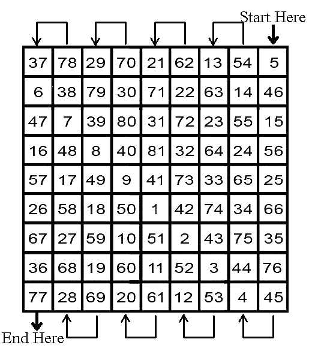

Kabalistic/Magickal Square of the Moon for empowering chakras, strengthening a debilitated Moon, and for help in health and overall spiritual advancement related to the Moon


Kabalistic/Magickal Square of the Moon for material success, prosperity, and earthly [non-spiritual] affairs

The mantra for the Moon is for 81 days in a row. It is important never to skip any days, as this will cancel out the entire work.
Begin the mantra when the Moon in its full phase, is strong in its home sign of Cancer, or when it is in its exalted sign of Taurus. The Moon is at its most powerful when it is full.
DO NOT begin this mantra when the Moon is in the signs of Scorpio [its fall] or Capricorn [its detriment].
Begin the mantra on a Monday, during the hours of the Moon.
Begin during night hours, when the Sun is completely set and it is dark, and the Moon is visible, the brighter the Moon, the better.
Ideally, each day, the mantra chosen for the Moon should be recited during the hours of the Moon for that day. This is ideal, but regardless never skip any days, regardless of the hour.
Ritual/Magickal Rulerships for the Moon:
The home and family, food and drink, restaurants, hotels and inns, water and
liquids, domestic affairs, women, early childhood, the mother, the public,
emotions, feelings, instincts, the memory, unconscious, habits, childbearing,
moods, the psyche, early memories.
Parts of the Body ruled by the Moon: The breasts, the womb, lymphatic and other non-blood body fluids, perspiration and saliva, the stomach, and the digestive organs.
Diseases: Excessive or deficient body fluids, manic/depressive, menstrual problems, colitis, diseases of the bowels.
Professions: Cooks, culinary, hotel/hospitality workers, restaurant workers, all common employment, children's nurses, midwives.
The Moon rules: Your mother, the women in your life, your family, your home, your emotions, moods, feelings, and intuitions, silver, and your third eye.
In your astrology chart: The house the Moon is posited in, along with the house/s that has the sign of Cancer on the cusp.
The Kabalistic/Magickal planetary square working empowers the third eye, and strengthens a weakened/debilitated Moon in one's astrology chart, helping in the affairs ruled by the house/s with the lunar sign of Cancer on the cusp/s and the house containing the Moon.
MANTRA FOR THE MOON:
AUM ŞRAAM ŞRIM ŞRAUM SAU CHANDRAMASE NAMA
One can replace with NAMA with SVAHA ٠ [S-V-AH-HAH]٠ when working for
spiritual goals
Pronunciation: AHH-UUU-MMM ٠ SH-RR-AH – AH-MM ٠ SH-RR-EE-MM ٠ SH-RR-AH-UU-MM ٠ SAH-UUU ٠ CH-AH-NN-D-RR-AH-MM-AHSAY ٠ NAH-MAH
AH rhymes with Saw ٠ UUU rhymes with Too ٠ All R's need to be rolled ٠
CH is properly pronounced as the German Ich, there is no English equivalent. The CH sound is made in the soft palate towards the throat, not in the front/hard palate as in English.
© Copyright 2011, Joy of Satan Ministries;
Library of Congress Number: 12-16457
Back to Kabalistic/Magickal Squares Main Page